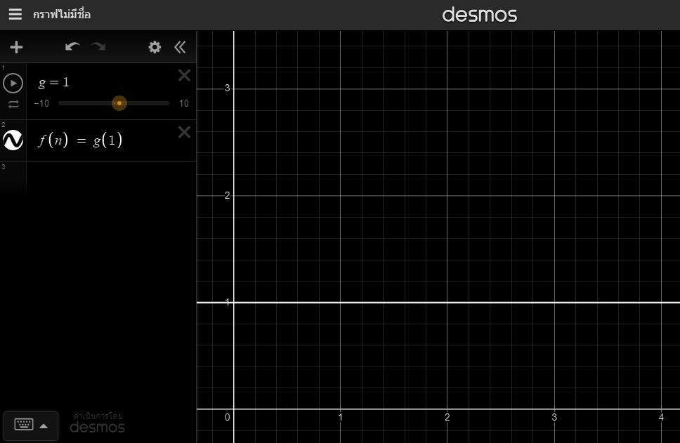
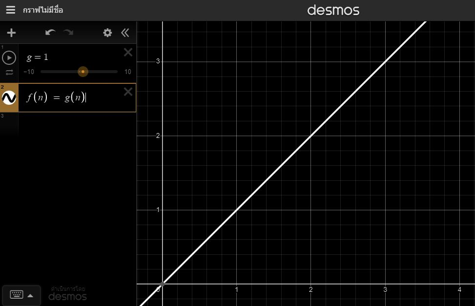
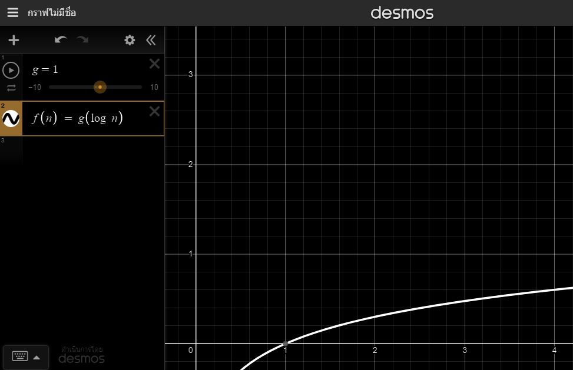
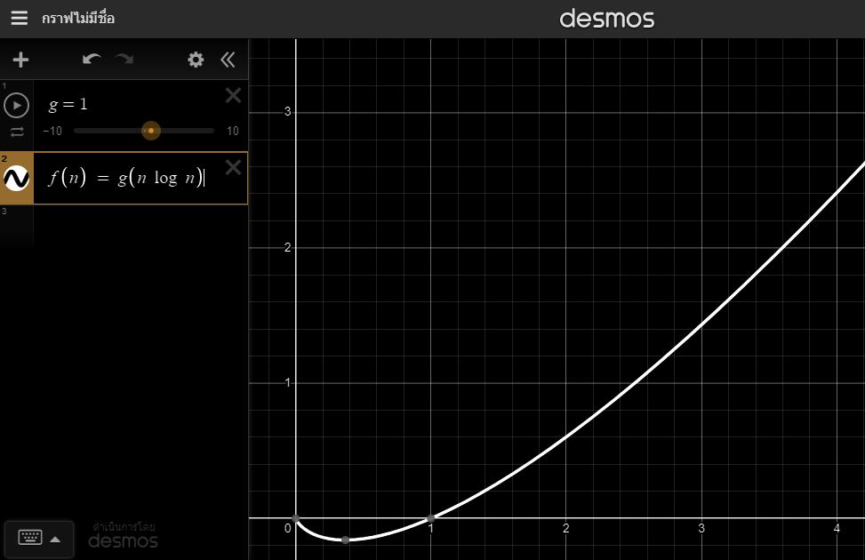
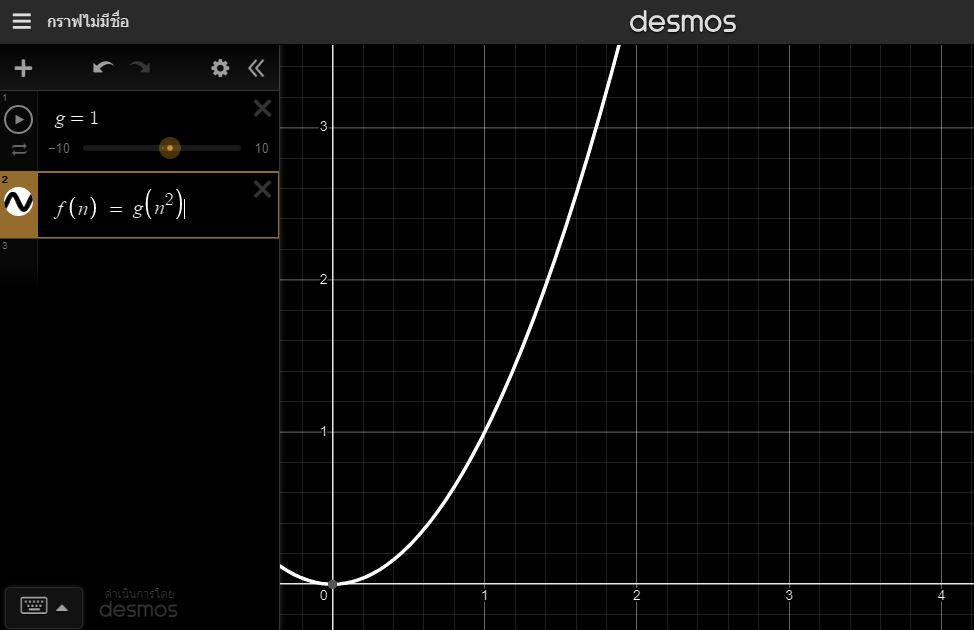
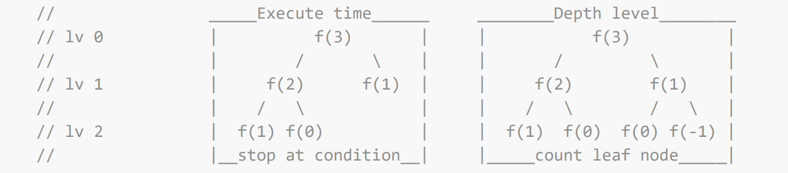
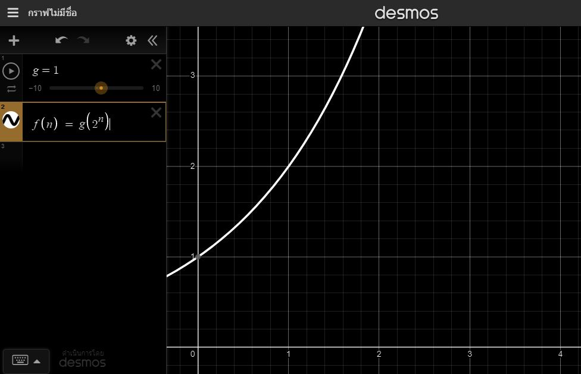
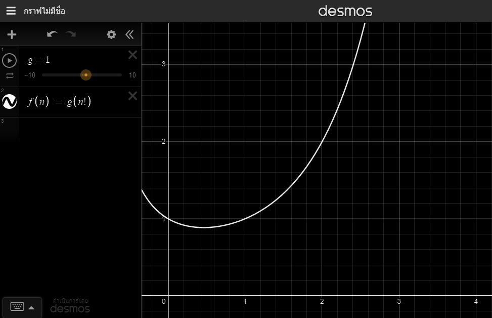

Time Complexity
Download PDFPrapas K : 2023, 24 AUG
What is Time Complexity
Time complexity is a measure used in computer science and algorithm analysis to estimate how the running time of an algorithm increases with the input size.
It helps us understand the efficiency of an algorithm and how it scales as the problem size grows.
Time complexity is often expressed using Big O notation, which provides an upper bound on the growth rate of an algorithm's running time.
In Big O notation, the time complexity of an algorithm is denoted O(f(n)), where f(n)
is a function representing the growth rate of the algorithm's running time concerning the input size "n."
Concept
the amount of time taken to run an algorithm ( estimated ), as a function of the length of the input.
The complexity is a theoretical measurement to get an idea of how an algorithm slow down on bigger inputs compared to smaller inputs or compared to other algorithms.
credit: AbcAeffchen
The growth rate algorithm
The growth rate for an algorithm is the rate at which the cost of the algorithm grows as the size of its input grows.
 https://miro.medium.com/max/1400/1*j8fUQjaUlmrQEN_udU0_TQ.jpeg
https://miro.medium.com/max/1400/1*j8fUQjaUlmrQEN_udU0_TQ.jpeg
O(1) - Constant
Constant Time Complexity: The algorithm's running time does not depend on the input size. It performs the same number of operations regardless of the input size.
s = [ -1000000, -999999, ..., 0, ..., 999999, 10000000 ]
const len = (str) => {return str.length};
const isBool = (value) => {return value ? true : false};
const isString = (value) => {return isNaN(value) ? true : false};
const searchItem = (index) => {return [1, 'a', 2, 'b', 100000000][index]};

O(n) - Linear
Linear Time Complexity: The algorithm's running time grows linearly with the input size. The number of operations increases linearly with the input.
for(let i = 0; i < 10; i++){ // length = 10
console.log(i) // 0 1 2 3 4 5 6 7 8 9
}
for(let i = 0; i <= 10; i++){ // length = 11
console.log(i) // 0 1 2 3 4 5 6 7 8 9 10
}
for(let i = 1; i < 10; i++){ // length = 9
console.log(i) // 1 2 3 4 5 6 7 8 9
}
for(let i = 1; i <= 10; i++){ // length = 10
console.log(i) // 1 2 3 4 5 6 7 8 9 10
}

O(log n) - Logarithmic
Logarithmic Time Complexity: The algorithm's running time grows logarithmically with the input size. As the input size increases, the running time grows at a slower rate compared to linear growth.
let n = 16;
let count = 0;
function logFunc(n){
if(n <= 1){
return `Done in ${count} times`;
}
n = Math.floor(n / 2);
count++;
return logFunc(n);
}
console.log(logFunc(n));
for(let i = 0; i < 10; i+=3){
console.log(i) // 0 3 6 9
}

O(n * log n) - Log Linear
Linearithmic Time Complexity: The algorithm's running time grows between linear and logarithmic. Common in many efficient sorting and searching algorithms like Merge Sort and Quick Sort.
for(let i = 0; i < 5; i++){
for(let j = 1; j < 5; j*=2){
console.log(i, j)
// 0 1
// 0 2
// 0 4
// 1 1
// 1 2
// 1 4
// 2 1
// 2 2
// 2 4
// 3 1
// 3 2
// 3 4
// 4 1
// 4 2
// 4 4
}
}

O(n2) - Quadratic
Quadratic Time Complexity: The algorithm's running time grows quadratically with the input size. It generally involves nested loops.
for(let i = 0; i < 5; i++){
for(let j = 0; j < 3; j++){
console.log(i, j)
// 0 0
// 0 1
// 0 2
// 1 0
// 1 1
// 1 2
// 2 0
// 2 1
// 2 2
// 3 0
// 3 1
// 3 2
// 4 0
// 4 1
// 4 2
}
}

O(2n) - Exponential
The pattern to watch for is that if a recursive function makes more then one call, the complexity is often O(branchesdepth), where branches refers the number recursive calls made and the depth refers to the depth of the tree this creates.
Credit: Joseph Trettevik
Power set
s = [1, 3, 5]
n(s) = 3
P(n(s)) = 2^3 = 8
s = [5, 8, 12, 1, 6]
n(s) = 5
P(n(s)) = 2^5 = 32
function fibo(n){
if(n === 1 || n === 0){ return n; }
return fibo(n - 1) + fibo(n - 2); // 2 branches
}
fibo(1): 1 execute 1 times depth lv. 0 = 1
fibo(2): 1 execute 3 times depth lv. 1 = 2
fibo(3): 2 execute 5 times depth lv. 2 = 4
fibo(10): 55 execute 177 times depth lv. 9 = 512


O(n!) - Factorial
If there are N cities, the brute force method will try each and every permutation of these N cities.
Credit: codaddict
let allExecute = 0;
let t0 = 0;
function nFactorial(n){
t0 = performance.now();
let num = n;
allExecute++;
if(n === 0){
return 1;
};
for(let i = 1; i <= n; i++) {
num = n * nFactorial(n - 1);
}
return num;
}
let t1 = performance.now();
nFactorial(1): 1 0.045 milliseconds 1 branches execute 2 times
nFactorial(2): 2 2.714 milliseconds 2 branches execute 5 times
nFactorial(5): 120 3.356 milliseconds 120 branches execute 326 times
nFactorial(7): 5040 12.75 milliseconds 5040 branches execute 13700 times

Primitive Operations (POs)
In computer science and algorithm analysis, primitive operations refer to the basic and fundamental operations that an algorithm or program performs. These operations are considered to have constant time complexity and are used to measure the efficiency of an algorithm in terms of its execution time. The choice of primitive operations might vary depending on the context, but some common examples of primitive operations include:
1. Arithmetic Operations: Addition, subtraction, multiplication, and division of simple data types like integers, floating-point numbers, etc.
2. Assignment: Assigning a value to a variable.
3. Comparison: Comparing two values to check for equality, inequality, greater than, less than, etc.
4. Memory Access: Reading from or writing to a specific memory location.
5. Control Flow: Basic control structures like branching (if-else statements) and looping (for, while, do-while loops).
6. Function Calls: Invoking a function or method.
7. Pointer Operations: Operations on pointers such as dereferencing or getting the address of a variable.
8. Array Access: Accessing elements in an array using an index.
When analyzing the time complexity of an algorithm, it is often assumed that these primitive operations take constant time (O(1)) because they are considered elementary and do not depend on the size of the input data. However, it's essential to consider that the actual time taken by these operations might vary depending on hardware architecture, compiler optimizations, and other low-level factors. By counting the number of primitive operations executed by an algorithm as a function of the input size, we can determine its time complexity and understand how the running time scales with larger inputs. This analysis helps in comparing and selecting the most efficient algorithm for a given problem. ChatGPT
My summary : Count No. of operations that the algorithm is performing at worst case.
You may found a variety of counting methods. Keep reminding that counting is only an approximation for make the performance of the function can be measured.
Counting concept
| POs (Primitive Operations) | expression | constant factor |
|---|---|---|
| Assigned a value to variable | v = 5 | 1 |
| Calling a method | function() | 1 |
| Performing an arithmetic operations ( + - * / % ) | 1 + 2 | 1 |
| Comparing two numbers | 1 < 2 , 1 === 2 | 1 |
| Indexing into an array | array[i] | 1 |
| Returning from a method | return | 1 |
Single line code
let num = 0; // POs is assignment = 1 console.log(num) // POs is only log = 1 let sum = 1 + 2 // POs is arithmetic operations and assign = 2 console.log(1 < 2) // POs is comparison and log = 2
Iteration loop
has 3 tasks to processing initial value, condition, updation
for(initial value; condition; updation){
/*body statement*/
}
initial value initial value
while(condition){ do{
/*body statement*/ /*body statement*/
updation updation
} } while(condition);
Excepted These loops are execute n times, there are no updation and condition.
for(value of items){ for(value in items){
/*body statement*/ /*body statement*/
} }
Calculate iteration
- Initial value is init value to starting count each loop.
- Condition is the determinants No. of iterations from initial value until whatever condition has setted. If working in a large system or with a database, perhaps we cannot know correct of No. of iterations so for simplicity will called that n times (or any) and n will related to the condition that executed is true and at the last of every single iteration the condition always executed to be false 1 time for exit the iterations. So general form is n + 1
- Note: every example in this topic
- - use update just only
i++andi-- - - use absolute value because it's best way to counting for this case
- - for to show formula structure and how to use it In general will use updation
- if either of initial value or condition is 0
-
if condition use > or < : No. of iterations is n + 1 | n is initial value or condition not equals to 0 and turns negative sign to positive sign.
- i = 0; i < 3; i++
- i = 3; i > 0; i--
- i = -3; i < 0; i++
- i = 0; i > -3; i--
All of this No. of iterations is 3 + 1
-
if condition use ≥ or ≤ it's mean No. of iterations is (n + 1) + 1 | n is initial value or condition not equals to 0 and turns negative sign to positive sign.
- i = 0; i <= 3; i++
- i = 3; i >= 0; i--
- i = -3; i <= 0; i++
- i = 0; i >= -3; i--
All of this No. of iterations is (3 + 1) + 1
-
if condition use > or < : No. of iterations is n + 1 | n is initial value or condition not equals to 0 and turns negative sign to positive sign.
- if either of initial values or condition ≠ 0 No. of iterations is (n - initial value) + 1
-
if condition use ≥ or ≤ the condition have to shift ceiling so n is
- condition + 1 : if updation is plus.
- condition - 1 : if updation is minus.
-3 -2 -1 0 1 2 3 4 No. of iterations i = 1; i < 3; i++ - - - - ✔ ✔ ✗ - |3 - 1| + 1 i = -3; i <= 2; i++ ✔ ✔ ✔ ✔ ✔ ✔ ✗ - |(2 + 1) - (-3)| + 1 i = 4; i >= 1; i-- - - - ✗ ✔ ✔ ✔ ✔ |(1 - 1) - 4| + 1 i = 1; i >= -2; i-- ✗ ✔ ✔ ✔ ✔ - - - |((-2) - 1) - 1| + 1 -
if condition use ≥ or ≤ the condition have to shift ceiling so n is
- Updation
determines the type of function it is implied when value
≠ 0 or 1
because updation use for divisor of n.
And if result of division turns out to decimal use only the integer then plus 1
- If updation is plus or minus called linear growth. Formula is $$\color{ff2277}{POs}\ ⋅\ \color{001deb}{(\frac{condition\ -\ \color{00bd06}{initial\ value}}{\color{f27d07}{updation}})\ \color{red}{+\ 1}}$$
- If updation is mutiply or division called logarithmic growth.
Use updation to be logarithm base
and the either of initial value or condition where
largest value to be dividend and smallest to be divisor.
Formula is
$$\log_{\color{f27d07}{updation}}\frac{largest\ value}{smallest\ value}$$
- condition * updation : if updation is multiplication.
- condition / updation : if updation is division.
example i = 0; i < 10; i+=2 i = 2; i <= 10; i+=2 i = 10; i > 2; i-=2 i = 10; i >= 2; i-=2 initial, condition 0 < 10 2 <= 10 10 > 2 10 >= 2 updation value 2 2 -2 -2 No. of iterations $$(\frac{10\ -\ 0}{2})\ +\ 1$$ $$(\frac{(10\ \textbf{+\ 1})\ -\ 2}{2})\ +\ 1$$ $$(\frac{2\ -\ 10}{-2})\ +\ 1$$ $$(\frac{(2\ \textbf{-\ 1})\ -\ 10}{-2})\ +\ 1$$ is decimal - 4 + 1 - 4 + 1 true 0, 2, 4, 6, 8 2, 4, 6, 8, 10 10, 8, 6, 4 10, 8, 6, 4, 2 false 10 12 2 0 example i = 2; i < 32; i*=2 i = 2; i <= 32; i*=2 i = 12; i > 3; i/=2 i = 12; i >= 3; i/=2 i = 12; i >= 3; i/=2 initial, condition 2 < 32 2 <= 32 12 > 3 12 >= 3 12 >= 3 updation value 2 2 2 2 2 No. of iterations $$\log_{2}\frac{32}{2}$$ $$\log_{2}\frac{32\ \textbf{*\ 2}}{2}$$ $$\log_{2}\frac{12}{3}$$ $$\log_{2}\frac{12}{3\ \textbf{/ 2}}$$ $$\log_{\frac{1}{2}}\frac{3}{12\ \textbf{/}\ \frac{\textbf{1}}{\textbf{2}}}$$ is decimal - - - - - true 2, 4, 8, 16 2, 4, 8, 16, 32 12, 6 12, 6, 3 12, 6, 3 false 32 64 3 1.5 1.5
Conclusion
| Lesser than | i = 0; i < n; i++ | i = 3; i < n; i+=2 | i = -3; i < n; i+=5 | i = 1; i < n; i*=2 |
|---|---|---|---|---|
| condition | $$\color{001deb}{(\frac{n\ -\ \color{00bd06}{(0)}}{\color{f27d07}{1}})}\ \color{red}{+\ 1}$$ | $$\color{001deb}{(\frac{n\ -\ \color{00bd06}{(+3)}}{\color{f27d07}{2}})}\ \color{red}{+\ 1}$$ | $$\color{001deb}{(\frac{n\ -\ \color{00bd06}{(-3)}}{\color{f27d07}{5}})}\ \color{red}{+\ 1}$$ | $$\color{001deb}{(}\color{666666}\log_{\color{f27d07}{2}}\frac{\color{001deb}{n}}{\color{00bd06}{1}}\color{001deb}{)}\ \color{red}{+\ 1}$$ |
| updation | $$\color{001deb}{{\color{ff2277}{2}\ ·}\ \frac{n\ -\ \color{00bd06}{(0)}}{\color{f27d07}{1}}}$$ | $$\color{001deb}{{\color{ff2277}{2}\ ·}\ \frac{n\ -\ \color{00bd06}{(+3)}}{\color{f27d07}{2}}}$$ | $$\color{001deb}{{\color{ff2277}{2}\ ·}\ \frac{n\ -\ \color{00bd06}{(-3)}}{\color{f27d07}{5}}}$$ | $$\color{001deb}{(}\color{666666}\log_{\color{f27d07}{2}}\frac{\color{001deb}{n}}{\color{00bd06}{1}}\color{001deb}{)}$$ |
| Lesser than or equal |
i = 0; i <= n; i++ | i = 3; i <= n; i+=2 | i = -3; i <= n; i+=5 | i = 2; i <= n; i*=4 |
|---|---|---|---|---|
| condition | $$\color{001deb}{(\frac{(n\ +\ 1)\ -\ \color{00bd06}{(0)}}{\color{f27d07}{1}})}\ \color{red}{+\ 1}$$ | $$\color{001deb}{(\frac{(n\ +\ 1)\ -\ \color{00bd06}{(+3)}}{\color{f27d07}{2}})}\ \color{red}{+\ 1}$$ | $$\color{001deb}{(\frac{(n\ +\ 1)\ -\ \color{00bd06}{(-3)}}{\color{f27d07}{5}})} \color{red}{+\ 1}$$ | $$\color{001deb}{(}\color{666666}\log_{\color{f27d07}{4}}\frac{\color{001deb}{n\ *\ 4}}{\color{00bd06}{2}}\color{001deb}{)}\ \color{red}{+\ 1}$$ |
| updation | $$\color{001deb}{{\color{ff2277}{2}\ ·}\ \frac{(n\ +\ 1)\ -\ \color{00bd06}{(0)}}{\color{f27d07}{1}}}$$ | $$\color{001deb}{{\color{ff2277}{2}\ ·}\ \frac{(n\ +\ 1)\ -\ \color{00bd06}{(+3)}}{\color{f27d07}{2}}}$$ | $$\color{001deb}{{\color{ff2277}{2}\ ·}\ \frac{(n\ +\ 1)\ -\ \color{00bd06}{(-3)}}{\color{f27d07}{5}}}$$ | $$\color{001deb}{(}\color{666666}\log_{\color{f27d07}{4}}\frac{\color{001deb}{n\ *\ 4}}{\color{00bd06}{2}}\color{001deb}{)}$$ |
| Greater than | i = 5; i > n; i-- | i = 4; i > n; i-=2 | i = 3; i > n; i-=4 | i = 7; i > n; i/=2 |
|---|---|---|---|---|
| condition | $$\color{001deb}{(\frac{n\ -\ \color{00bd06}{(+5)}}{\color{f27d07}{-1}})}\ \color{red}{+\ 1}$$ | $$\color{001deb}{(\frac{n\ -\ \color{00bd06}{(+4)}}{\color{f27d07}{-2}})}\ \color{red}{+\ 1}$$ | $$\color{001deb}{(\frac{n\ -\ \color{00bd06}{(+3)}}{\color{f27d07}{-4}})}\ \color{red}{+\ 1}$$ | $$\color{001deb}{(}\color{666666}\log_{\color{f27d07}{2}}\frac{\color{001deb}{7}}{\color{00bd06}{n}}\color{001deb}{)}\ \color{red}{+\ 1}$$ |
| updation | $$\color{001deb}{{\color{ff2277}{2}\ ·}\ \frac{n\ -\ \color{00bd06}{(+5)}}{\color{f27d07}{-1}}}$$ | $$\color{001deb}{{\color{ff2277}{2}\ ·}\ \frac{n\ -\ \color{00bd06}{(+4)}}{\color{f27d07}{-2}}}$$ | $$\color{001deb}{{\color{ff2277}{2}\ ·}\ \frac{n\ -\ \color{00bd06}{(+3)}}{\color{f27d07}{-4}}}$$ | $$\color{001deb}{(}\color{666666}\log_{\color{f27d07}{2}}\frac{\color{001deb}{7}}{\color{00bd06}{n}}\color{001deb}{)}$$ |
| Greater than equal |
i = 5; i >= n; i-- | i = 4; i >= n; i-=2 | i = 3; i >= n; i-=4 | i = 32; i >= n; i/=4 |
|---|---|---|---|---|
| condition | $$\color{001deb}{(\frac{(n\ -\ 1)\ -\ \color{00bd06}{(+5)}}{\color{f27d07}{-1}})}\ \color{red}{+\ 1}$$ | $$\color{001deb}{(\frac{(n\ -\ 1)\ -\ \color{00bd06}{(+4)}}{\color{f27d07}{-2}})}\ \color{red}{+\ 1}$$ | $$\color{001deb}{(\frac{(n\ -\ 1)\ -\ \color{00bd06}{(+3)}}{\color{f27d07}{-4}})} \color{red}{+\ 1}$$ | $$\color{001deb}{(}\color{666666}\log_{\color{f27d07}{4}}\frac{\color{001deb}{32}}{\color{00bd06}{n\ /\ 4}}\color{001deb}{)}\ \color{red}{+\ 1}$$ |
| updation | $$\color{001deb}{{\color{ff2277}{2}\ ·}\ \frac{(n\ -\ 1)\ -\ \color{00bd06}{(+5)}}{\color{f27d07}{-1}}}$$ | $$\color{001deb}{{\color{ff2277}{2}\ ·}\ \frac{(n\ -\ 1)\ -\ \color{00bd06}{(+4)}}{\color{f27d07}{-2}}}$$ | $$\color{001deb}{{\color{ff2277}{2}\ ·}\ \frac{(n\ -\ 1)\ -\ \color{00bd06}{(+3)}}{\color{f27d07}{-4}}}$$ | $$\color{001deb}{(}\color{666666}\log_{\color{f27d07}{4}}\frac{\color{001deb}{32}}{\color{00bd06}{n\ /\ 4}}\color{001deb}{)}$$ |
Counting with POs
ex1 for(let i = 0; i < n; i++) { console.log(i); }
▼ ▼ ▼ ▼
POs = 1 + (n + 1) + 2(n) + n = 4n + 2
ex2 for(let i = 1; i <= n; i++) { console.log(i); }
▼ ▼ ▼ ▼
POs = 1 + (((n + 1) - 1) + 1) + 2(n) + (n) = 4n + 2
ex3 for(let i = -3; i <= n; i++) { console.log(i); }
▼ ▼ ▼ ▼
POs = 1 + (((n + 1) - (-3)) + 1) + 2(n + 4) + (n + 4) = 4n + 18
ex4 for(let i = 10; i > n; i--) { console.log(i); }
POs = 1 + (((n - 10) / (-1)) + 1) + 2((n - 10) / (-1)) + (n - 10) / (-1)
= 4n + 42
ex5 for(let i = 10; i >= n; i-=2) { console.log(i); }
POs = 1
+ ((((n - 1) - 10) / (-2)) + 1) + 2((n - 1) - 10) / (-2)
+ ((n - 1) - 10) / (-2)
= -2n + 24
ex6 for(let i = 0; i < n; i++) { // 1 + (n + 1) + (n)
// Outermost body is n
// Innermost is body of outermost so innermost iterate n times
for(let j = 10; j > n; j--) { // 1 + n(((n - 10) / (-1)) + 1) + 2n((n - 10) / (-1))
console.log(j); // n(n - 10) / (-1)
}
}
POs = 1 + (n + 1) + (n) + 1 + n(((n - 10) / (-1)) + 1)
+ 2n((n - 10) / (-1)) + n(n - 10) / (-1)
= (4n^2 - 43n - 3) / (-1)
Note : let i count only 1 beacause that assigning 0 at start loop only and i++ is already includes assigning i after increment.
How many of i modulo n equals to 1
countMod(num)
1. SET count to be 0 (storing result count default is 0)
2. LOOP i to num - 1
- IF num % i EQUAL TO 1
- THEN STATEMENT count + 1
- STATEMENT i + 1
3. END LOOP
4. RETURN count
num = 7
function countMod(num){
let count = 0; 1
for(let i = 0; i < num; i++){ 1 + 1(n + 1) + 2(n)
if(num % i === 1){ 2(n)
count++; 2(n) // 2(1) for best case
}
}
return count; 1
}
| n | count = 0 | let i = 0 | i < num | num % i = 1 | count++ | i++ | return | POs |
|---|---|---|---|---|---|---|---|---|
| 1 | true | true | true | 7 % 0 = NaN | true | |||
| 2 | true | 7 % 1 = 0 | true | |||||
| 3 | true | 7 % 2 = 1 | true | true | ||||
| 4 | true | 7 % 3 = 1 | true | true | ||||
| 5 | true | 7 % 4 = 3 | true | |||||
| 6 | true | 7 % 5 = 2 | true | |||||
| 7 | true | 7 % 6 = 1 | true | true | ||||
| 8 | false | true | ||||||
| 1 | 1 | 1(n + 1) | 2(n) | 2(n) | 2(n) | 1 | 7n + 4 |
Calc mean
calcMean(set_data)
1. SET sum to be 0 (sum of each element)
2. SET len to be length of set_data
3. LOOP i to len - 1
- OPERATION summation of sum and current data value
- STATEMENT i + 1
4. END LOOP
5. RETURN sum / len
const set_data = [4, 6, 1, 5]
const len = 4
function calcMean(set_data){
let sum = 0; 1
let len = set_data.length; 2
for(let i = 0; i < len; i++){ 1 + 1(n + 1) + 2(n)
sum += set_data[i]; 3(n)
}
return sum / len; 2
}
}
| n | sum = 0 | len = set_data.length | let i = 0 | i < len | sum += set_data[i] | i++ | return | POs |
|---|---|---|---|---|---|---|---|---|
| 1 | true | true | true | true | 0 + 4 = 4 | true | ||
| 2 | true | 4 + 6 = 10 | true | |||||
| 3 | true | 10 + 1 = 11 | true | |||||
| 4 | true | 11 + 5 = 16 | true | |||||
| 5 | false | true | ||||||
| 1 | 2 | 1 | 1(n + 1) | 3(n) | 2(n) | 2 | 6n + 7 |
Print 5 natural numbers from given x
naturalNumber(x)
1. IF x not be a natural number
- THEN
- STATEMENT console.log
- RETRUN
2. LOOP i = 1 to x
- console.log i
- STATEMENT i + 1
3. END LOOP
x = 5
function naturalNumber(x){
if(x < 1){ 1
console.log('Not a natural number'); 1
return 1
};
for(let i = 1; i < x; i++){ 1 + ((n + 1) - 1) + 2(n - 1)
console.log(i); (n - 1)
}
}
| n | x < 1 | console.log("..") | return | let i = 1 | i < x | console.log(i) | i++ | POs |
|---|---|---|---|---|---|---|---|---|
| 1 | false | |||||||
| 2 | true | true | 1 | true | ||||
| 3 | true | 2 | true | |||||
| 4 | true | 3 | true | |||||
| 5 | true | 4 | true | |||||
| 6 | false | |||||||
| 1 | 1 | 1 | 1 | (n + 1) - 1 | (n - 1) | 2(n - 1) | 4n + 1 |
Nested linear and logarithm loop
nestedLinearLogarithmic(n)
1. SET total to be 0
2. LOOP
- OUTER LOOP i to n + 1
- STATEMENT SET j to be 1
- INNER LOOP j to n
- STATEMENT INCREMENT TOTAL BY PLUS 1
- STATEMENT INCREMENT j BY MULTIPLY 2
3. END LOOP
4. RETURN total
let n = 3;
function nestedLinearLogarithmic(n){
let total = 0; 1
// Outer loop (O(n))
for(let i = 0; i < n + 1; i++){ 1 + 2((n + 1) + 1) + 2(n + 1)
let j = 1; 1(n + 1)
// body of outermost is (n + 1) represent to m
// + 1 of outermost is not false it just n + 1
// Inner loop (O(log n))
// j is initial value for innermost
// if result from log is decimal then use only integer then + 1
while(j < n){ m((log_2 n / j) + 1)
total += 1; 2m(log_2 n / j)
j *= 2; 2m(log_2 n / j)
}
}
return total; 1
}
Explain
- At outermost is linear loop it's basic to count, see at previous example before.
- At innermost is logarithmic loop
-
(n + 1) is the No. of iterations of the outermost loop that the innermost loop must iterate to. Represent to be m
- Condition$$\color{001deb}{m}\color{666666}{(}\color{001deb}{(}\color{666666}\log_{\color{f27d07}2}\color{001deb}\frac{n}{\color{00bd06}{j}})\ \color{red}{+\ 1}\color{666666}{)}$$
-
Updation$$\color{ff2277}{2}\color{001deb}{m}\color{001deb}{(}\color{666666}\log_{\color{f27d07}2}\color{001deb}\frac{n}{\color{00bd06}{j}})$$
- body not execute at condition false so get rid off + 1
- 2 is POs of code body it iterations related to condition then multiply to condition.
| total | let i | i < n + 1 | let j | j < n | total++ | j*=2 | i++ | return | POs |
|---|---|---|---|---|---|---|---|---|---|
| true | 0 | true | 0 | ||||||
| 1 | true | true | true | ||||||
| 2 | true | true | true | ||||||
| 4 | false | true | |||||||
| 1 | true | 0 | |||||||
| 1 | true | true | true | ||||||
| 2 | true | true | true | ||||||
| 4 | false | true | |||||||
| 2 | true | 0 | |||||||
| 1 | true | true | true | ||||||
| 2 | true | true | true | ||||||
| 4 | false | true | |||||||
| 3 | true | 0 | |||||||
| 1 | true | true | true | ||||||
| 2 | true | true | true | ||||||
| 4 | false | true | |||||||
| 4 | false | true | |||||||
| 1 | 1 | 2((n + 1) + 1) | 1(n + 1) | $$(n + 1)((\log_{2}\frac{n}{j}) + 1)$$ | $$2(n + 1)(\log_{2}\frac{n}{j})$$ | $$2(n + 1)(\log_{2}\frac{n}{j})$$ | 2(n + 1) | 1 | $$6n + \frac{5\log_{2}n*(n\ +\ 1)}{j} + 11$$ |
Measures
Lower bound ≤ f(n) ≤ Upper bound
It measures the time taken to execute each statement or the number of primitive operations performed by the algorithm are taken to be related by a constant factor. It is not going to examine the total execution time of an algorithm.
A function that is a boundary above the algorithms runtime function, when that algorithm is given the inputs that maximize the algorithm's run time.
Classes

 https://www.mdpi.com/1996-1073/12/1/19/htm
https://www.mdpi.com/1996-1073/12/1/19/htm
- constant C : The sum of coefficient that cause a new function from the original function to be compare between f(n) and g(n) | C is positive real constant
- constant K : Any value that make the equation comparison of the asymptotic notations f(n) and g(n) | K is positive real constant
Upper bound - Big-O
$$f(n) = O(g(n)) ⟺ ∃C > 0, ∃K > 0 : 0 ≤ | f(n) | ≤ C ⋅ g(n) | ∀n ≥ K$$f(n) = O(g(n)) the notaion is read f of n is Big-O of g of n, iff there exits
some positive constant c, k such that 0 ≤ | f(n) | ≤ C ⋅ g(n) | ∀ n ≥ K
| PROVE | choose k = 1 | |||
|---|---|---|---|---|
| f(n) | = | n2 + n | ||
| g(n) | = | n2 | ||
| O(g(n)) | = | O(n2) | ||
| cg(n) | = | n2 + n2 | = | 2n2 |
| c | = | 2 | ||
| k | = | 1 | ∴ | n ≥ 1 |
| | f(n) | ≤ cg(n) | = | | n2 + n | ≤ 2n2 | ||
| ∴ f(n) | = | n2 + n | is | O(n2) |
| Big-O | = | O(n2) | ∴ | n2 + n ∈ O(n2) |
Upper bound - Little-o
$$f(n) = o(g(n)) ⟺ ∃C > 0, ∃K > 0 : 0 < | f(n) | < C ⋅ g(n) | ∀n ≥ K$$f(n) = O(g(n)) the notaion is read f of n is Little-o of g of n, iff there exists positive
some constants c, k such that 0 < | f(n) | < C ⋅ g(n) | ∀ n ≥ K
| PROVE | choose k = 1 and c = 3 | |||
|---|---|---|---|---|
| f(n) | = | n2 + n | ||
| g(n) | = | n3 + n | ||
| o(g(n)) | = | o(n3) | ||
| c | = | 3 | ||
| cg(n) | = | 3 * n3 + n | = | 3n3 |
| k | = | 1 | ∴ | n ≥ 1 |
| | f(n) | ≤ cg(n) | = | | n3 + n | < 3n3 + n | ||
| ∴ f(n) | = | n2 + n | is | o(n3) |
| little-o | = | o(n3) | ∴ | n2 + n ∈ O(n3) |
Lower bound - Big-Ω
$$f(n) = Ω(g(n)) ⟺ ∃C > 0, ∃K > 0 : 0 ≤ | f(n) | ≤ C ⋅ g(n) | ∀n ≥ K$$f(n) = Ω(g(n)) the notaion is read f of n is Big-Omega of g of n, iff there exits
some positive constant c, k such that 0 ≤ | f(n) | ≤ C ⋅ g(n) | ∀ n ≥ K
| PROVE | choose k = 1 | |||
|---|---|---|---|---|
| f(n) | = | 3n2 | ||
| g(n) | = | n2 + n | ||
| Ω(g(n)) | = | Ω(n2) | ||
| cg(n) | = | n2 + n2 | = | 2n2 |
| c | = | 2 | ||
| k | = | 1 | ∴ | n ≥ 1 |
| cg(n) ≤ | f(n) | | = | 2n2 ≤ | 3n2 | | ||
| ∴ f(n) | = | 3n2 | is | Ω(n2) |
| Big-Ω | = | Ω(n2) | ∴ | 3n2 + ∈ Ω(n2) but 3n2 ∉ Ω(n2) |
Lower bound - Little-ω
$$f(n) = ω(g(n)) ⟺ ∃C > 0, ∃K > 0 : 0 < C ⋅ g(n) < | f(n) |\ by\ ∀n ≥ K$$f(n) = ω(g(n)) the notaion is read f of n is Little-omega of g of n, iff there exits
some positive constant c, k such that 0 < C ⋅ g(n) < | f(n) |, ∀n ≥ K
| PROVE | choose k = 1 | |||
|---|---|---|---|---|
| f(n) | = | 3n2 + n | ||
| g(n) | = | n2 | ||
| ω(g(n)) | = | ω(n2) | ||
| cg(n) | = | n2 + n2 | = | 2n2 |
| c | = | 2 | ||
| k | = | 1 | ∴ | n ≥ 1 |
| cg(n) ≤ | f(n) | | = | 2n2 < | 3n2 + n | | ||
| ∴ f(n) | = | 3n2 + n | is | ω(n2) |
| Little-ω | = | ω(n2) | ∴ | 3n2 + n ∈ ω(n2) but 3n2 + n ∉ o(n2) |
Upper and Lower bound - Big-Θ
$$f(n) = Θ(g(n)) ⟺ ∃C_1, C_2 > 0, ∃K > 0 : 0 ≤ C_1 ⋅ g(n) ≤ | f(n) |\ ≤ C_2 ⋅ g(n) | ∀n ≥ K$$f(n) = Θ(g(n)) the notaion is read f of n is Big-Theta of g of n, iff there exits
some positive constant c, k such that 0 ≤ | f(n) | ≤ C2 ⋅ g(n), ∀n ≥ K
some positive constant c, k such that 0 ≤ C1 ⋅ g(n) ≤ | f(n) |, ∀n ≥ K
| PROVE | Lower | choose k = 1 | Upper | ||
|---|---|---|---|---|---|
| f(n) | n2 + n | ||||
| notation | Big-Ω | Big-O | |||
| g(n) | n | n2 | |||
| Ω(n) | O(n2) | ||||
| c | 2 | 3 | |||
| n ≥ k | n ≥ 1 | n ≥ 1 | |||
| cg(n) | 2n | 3n2 | |||
| c1g(n) ≤ | f(n) | ≤ c2g(n) | 2n | ≤ | n2 + n | ≤ | 3n2 |